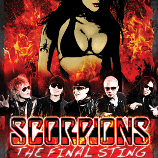

Scorpions are a German rock band formed in 1965 in Hanover by Rudolf Schenker. They're one of the most successful rock bands to come out of Continental Europe.Initially, they played a style that was influenced by British blues-rock, but as their career progressed, they evolved into a more melodic hard rock sound, gaining significant commercial success.
Their breakthrough came in the late 1970s and early 1980s with albums like "Lovedrive" (1979), "Animal Magnetism" (1980), and "Blackout" (1982). However, it was their album "Love at First Sting" (1984) that propelled them to global stardom, thanks to hits like "Rock You Like a Hurricane" and "Still Loving You." band experienced some lineup changes over the years, but the core members have remained Rudolf Schenker (guitar), Klaus Meine (vocals), Matthias Jabs (guitar), Paweł Mąciwoda (bass), and Mikkey Dee (drums) since 2016. Scorpions' music is characterized by catchy melodies, powerful guitar riffs, and Meine's distinctive vocal style. They've sold over 110 million records worldwide, making them one of the best-selling music artists in history. Despite being active for decades, they continue to tour and release new music, maintaining a dedicated fanbase globally.